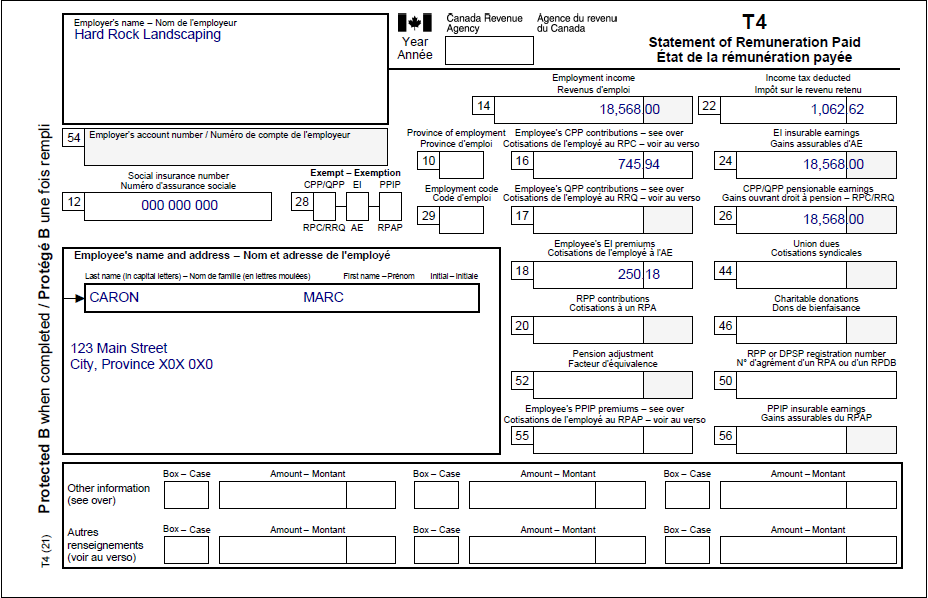
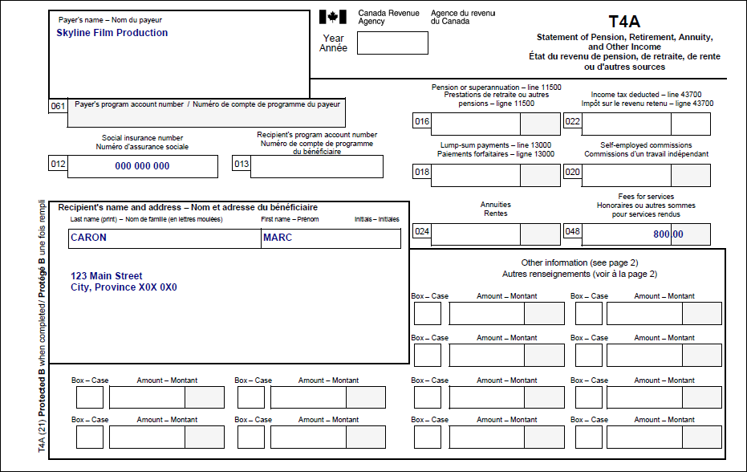

Reporting a T4A slip with income in box 048
Pre-test question
Question One
Sorry, that's incorrect
The amount in box 048 of a T4A slip is reported as self-employment or business income on line 13500 of the tax return and must also be reported on form T2125, Statement of Business or Professional Activities.
That's correct
The amount in box 048 of a T4A slip is reported as self-employment or business income on line 13500 of the tax return and must also be reported on form T2125, Statement of Business or Professional Activities.
Question Two
Sorry, that's incorrect
Generally, an individual reporting self-employment or business income would not be considered to have a simple tax situation so would not be eligible to use the CVITP services. However, the situation may be considered simple if all of the following conditions apply:
- income is under $1,000.00 and found in box 048 of the T4A slip
- no expenses are claimed
- the individual is neither registered for, nor required to register for GST/HST
That's correct
Generally, an individual reporting self-employment or business income would not be considered to have a simple tax situation so would not be eligible to use the CVITP services. However, the situation may be considered simple if all of the following conditions apply:
- income is under $1,000.00 and found in box 048 of the T4A slip
- no expenses are claimed
- the individual is neither registered for, nor required to register for GST/HST
Instructions
- Open the tax software
- Review the Background information and Required slips (tax slips, receipts, etc.)
- Provide all required information for the appropriate sections of the tax software
- Once completed, compare your results with the solution provided
- Afterwards, refer to the Takeaway points
Background information
Situation
Marc was employed by a landscaping business (Hard Rock Landscaping) during the summer. To earn extra money, he worked as a film extra and was paid as a subcontractor. He did not have any expenses.
Identification information
| Name | Marc Caron |
|---|---|
| Social insurance number (SIN) | 000 000 000 |
| Address | 123 Main Street City, Province X0X 0X0 |
| Date of birth | January 9, 1986 |
| Date of entry into Canada | June 16, 1994 |
| Marital status | Single |
Required slips
T4 – Statement of Remuneration Paid
Text version of the T4 slip
T4 – Statement of Remuneration Paid
Protected B
Employer’s name: Hard Rock Landscaping
Employee’s name and address:
Last name: Caron
First name: Marc
123 Main Street
City, Province X0X 0X0
Box 12: Social insurance number: 000 000 000
Box 14: Employment income – line 10100: 18,568.00
Box 16: Employee’s CPP contributions – line 30800: 745.94
Box 18: Employee’s EI premiums – line 31200: 250.18
Box 22: Income tax deducted – line 43700: 1,062.62
Box 24: EI insurable earnings: 18,568.00>br>
Box 26: CPP/QPP pensionable earnings: 18,568.00
T4A – Statement of Pension, Retirement, Annuity, and Other Income
Text version of the T4 slip
T4A – Statement of Pension, Retirement, Annuity, and Other Income
Protected B
Payer’s name: Skyline Film Production
Recipient’s name and address:
Last name: Caron
First name: Marc
123 Main Street
City, Province X0X 0X0
Box 012: Social insurance number: 000 000 000
Box 048: Fees for services: 800.00
Review your results
Solutions will be available in February 2023 as printable PDF.
Takeaway points
Steps to follow
- Review their background information and required slips
- In Interview setup, tick the boxes next to Pension income, other income and split pension income, COVID-19 benefits in the Pension section and Self-employed business income in the Self-employment section
- Click T4A and pension income in the left side menu and click the + sign next to T4A- Pension, retirement, annuity and other income (COVID-19 benefits)
- Complete the This T4A slip was issued by and box 048, Fees for services (report also this amount as a T2125 – Business or Professional income) fields
- Click Self-employment income in the left side menu, then click the + sign next to T2125 - Business income, and complete the fields under the Business identification heading
- Select 711512, Independent actors, comedians and performers from the Select the North American Industrial Classification System code (NAICS) that best describes the business’s main revenue-generating business activity. field
- Click Income, expenses in the left-side menu and enter the amount from box 048 into the Fees for Services (T4A Box 048) field
The T4A box 048 situation is a simple tax situation because the income earned is under $1,000.00 and no expenses are being claimed.
Form T2125 is mandatory and generated with the tax return. It includes the same amount of income reported on line 13500.
For more information refer to UFile instructions.